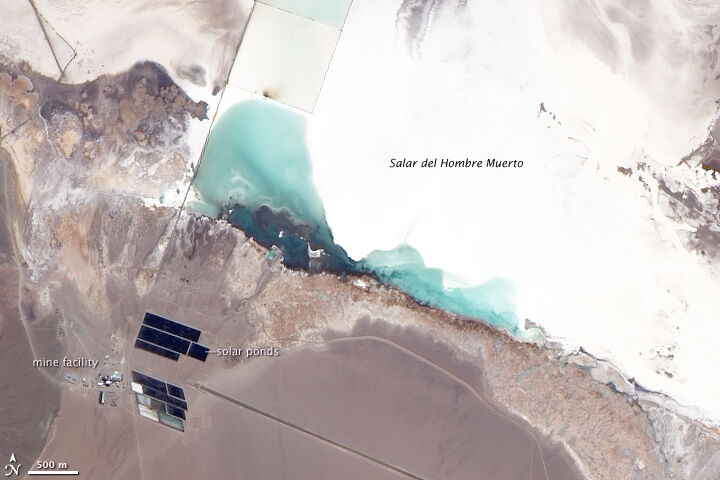

Catamarca's Twin Engines: Fénix 1B and Sal de Vida on Track for H2 2026
Two $700m Rio Tinto projects add 25,000 tonnes a year between them at the Salar del Hombre Muerto. Commissioning runs at 60% and 40%.

While Rincón takes the headlines, the quieter engine of Rio Tinto's Argentine growth sits at the Salar del Hombre Muerto in Catamarca, where two expansion projects are moving through commissioning on parallel tracks.
Fénix 1B, a $700m expansion of the country's longest-running lithium operation, adds 10,000 tonnes per year of lithium carbonate equivalent and is roughly 60% through commissioning, with delivery scheduled for the second half of 2026.
Sal de Vida, also budgeted at $700m, is the larger of the pair: 15,000 tonnes a year of capacity, currently about 40% through commissioning on the same delivery window.
Why Hombre Muerto matters
The Salar del Hombre Muerto is Argentine lithium's proving ground — the basin where commercial production began in the 1990s and where the industry's operating knowledge is deepest. Adding 25,000 tonnes of annual capacity there is lower-risk expansion: known brine chemistry, existing infrastructure, an experienced workforce.
With Fénix producing, Rincón exporting its first cargo from Salta, and the Olaroz joint venture running in Jujuy, Rio Tinto is now the only lithium carbonate producer exporting from all three provinces of Argentina's northwest — a geographic spread no other company in the country can match.
For Catamarca, the two projects anchor a provincial lithium economy that is becoming less dependent on any single operation — and for the national supply curve, they are among the most certain tonnes of 2026.